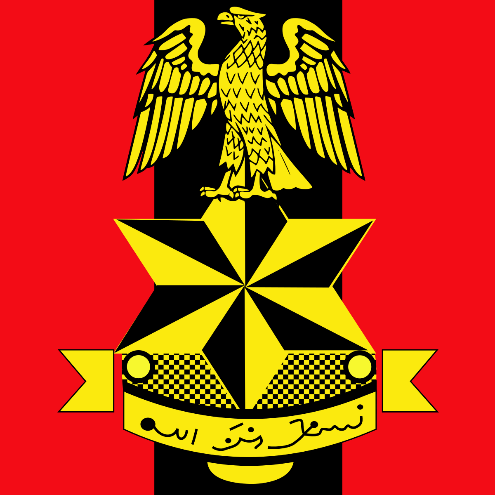
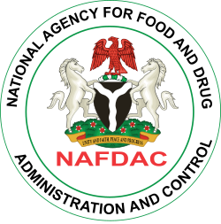
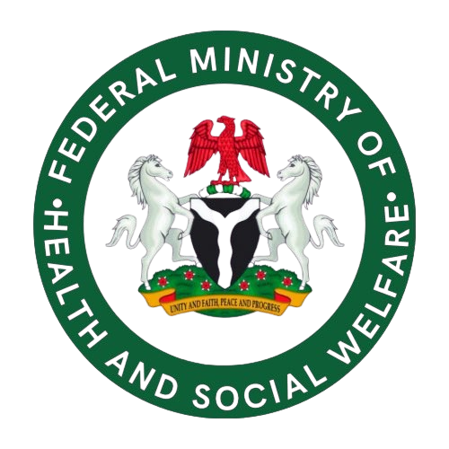
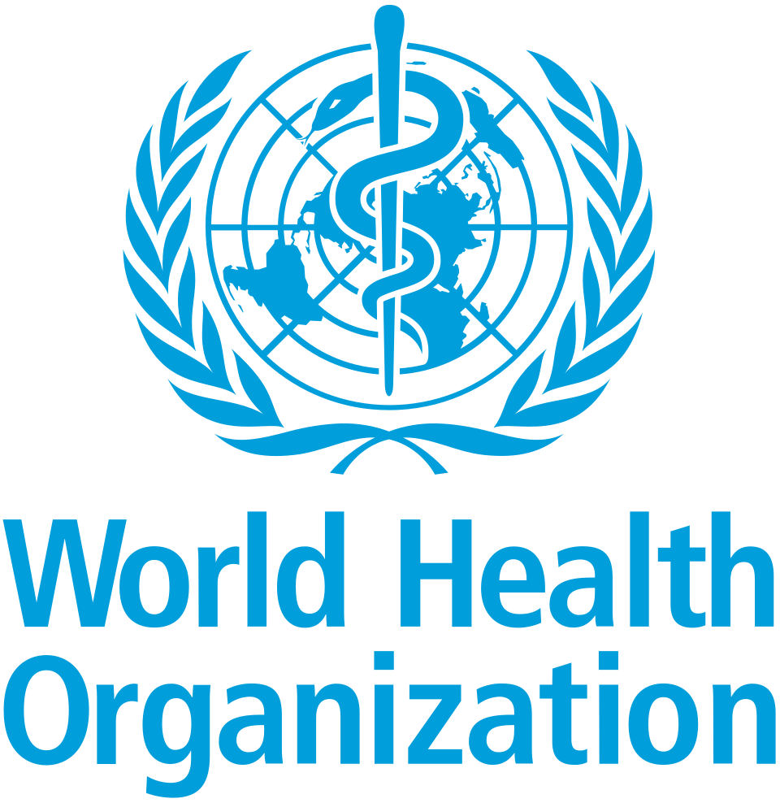
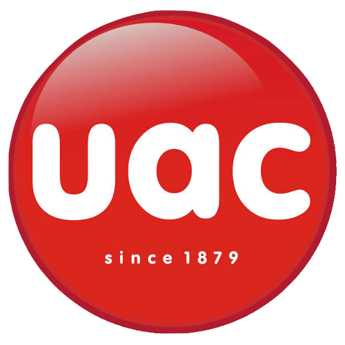
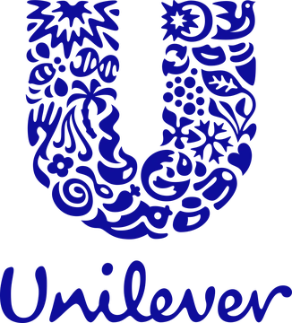
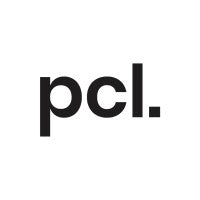
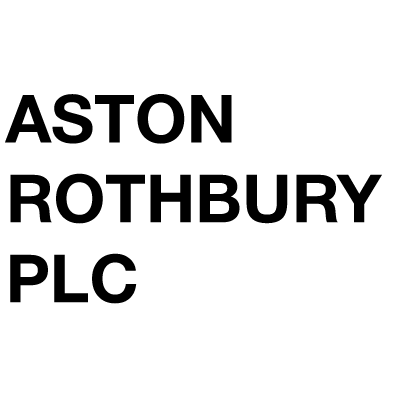

Nigerian Army Medical Corps (NAMC)
Founding partnership · 1992The Nigerian Army Medical Corps, established in 1956, provides comprehensive healthcare to Nigerian military personnel and has been instrumental in peacekeeping missions across Africa.
Champions Pharmaceuticals was specifically ordered for creation by senior NAMC leadership to supply documented medications from the United Kingdom during Nigeria’s military era, a founding relationship established through the late Honourable Lt. Colonel S.J. Bala, Deputy Director of MPSN at the Nigerian Army Medical Corps, Bonny Camp, Victoria Island.
- Military pharmaceutical supply chains & logistics
- Emergency medical supplies for peacekeeping operations
- Specialised medication procurement & distribution
- Healthcare-facility support across installations

NAFDAC, Food & Drug Administration & Control
Registered 1993 · 30+ years of complianceNAFDAC, established in January 1993, regulates the manufacturing, importation, exportation, distribution and sale of drugs, food, cosmetics, medical devices and chemicals in Nigeria.
Champions Pharmaceuticals was officially registered on 4 June 1993, the same year NAFDAC was established. The documented UK medication list is understood to have contributed to the discussions that informed NAFDAC’s regulatory approach to pharmaceutical importation and quality standards.
- Regulatory compliance & standards adherence
- Quality control & product verification
- Import documentation & licensing
- Pharmacovigilance & adverse-event reporting

Federal Ministry of Health & Social Welfare
30+ years supporting national healthcareThe Federal Ministry of Health and Social Welfare leads Nigeria’s health-sector transformation, strengthening health systems, improving primary healthcare and advancing Universal Health Coverage.
Following Nigeria’s return to democracy in 1999, Champions has maintained continuous collaboration with the Ministry, supporting national health initiatives, public-health programmes and emergency-response efforts across successive administrations.
- National primary-healthcare programmes & supply
- Emergency response & disaster-relief supplies
- Public-health campaign support
- Healthcare-infrastructure strengthening

World Health Organization (WHO) Nigeria
Aligned with global health objectivesWHO Nigeria provides technical support for health-system strengthening, disease prevention and emergency response, advancing Universal Health Coverage and Sustainable Development Goal 3.
Champions Pharmaceuticals aligns its work with WHO Nigeria’s initiatives through pharmaceutical supply-chain contributions, emergency-response capabilities and participation in public–private partnerships advancing primary-healthcare revitalisation, ensuring adherence to WHO global standards.
- Support for WHO health-facility programmes
- Outbreak-response pharmaceutical supplies
- Immunisation-programme logistics
- Health-system capacity building
British Government, Trade & Standards
UK–Nigeria pharmaceutical tradeA strategic relationship supporting international pharmaceutical trade, quality standards and regulatory alignment between the United Kingdom and Nigerian pharmaceutical sectors.
This relationship facilitated Champions’ founding mission to bring a documented list of high-quality, regulated medications from the United Kingdom to supply the Nigerian Army, demonstrating a commitment to quality standards and proper documentation.
- UK pharmaceutical sourcing & quality assurance
- International regulatory-standards alignment
- Cross-border trade documentation
- International best-practice & quality control
Pharmaceutical Society of Nigeria (MPSN)
Member since founding · Est. 1927The Pharmaceutical Society of Nigeria, established in 1927, is Nigeria’s premier professional body for pharmacists, maintaining the highest standards of professional ethics and pharmaceutical education.
Champions Pharmaceuticals is a proud creation under MPSN’s professional framework. Our founder’s mother, Olayinka Mosunmola Kuti, served as an A.J. Seward / Kingsway Chemist at the UAC Hospital Department, exemplifying the family’s deep MPSN heritage; our founding was facilitated through the late Lt. Colonel S.J. Bala, former Deputy Director of MPSN.
- Professional certification & continuing education
- Pharmaceutical ethics standards
- Industry advocacy & policy development
- Quality-assurance best practices

United Africa Company of Nigeria (UACN)
Historical heritage · 1879–presentThe United Africa Company of Nigeria, historically a subsidiary of Unilever Plc, represents a foundational connection to Champions Pharmaceuticals’ pharmaceutical heritage.
Olayinka Mosunmola Kuti, the founder’s late mother, played a significant role managing the Hospital Department at UACN as an A.J. Seward / Kingsway Chemist. Our family’s pharmaceutical legacy traces through the Royal Niger Company (1886), United African Company (1879) and UACN, establishing the professional foundation that led to Champions Pharmaceuticals’ creation.
- Historical pharmaceutical supply-chain expertise
- Professional standards from the UACN Hospital Dept.
- A.J. Seward / Kingsway Chemist heritage
- Importation & quality-control legacy

Unilever, Heritage Connection
Heritage lineage via UACA global consumer-goods leader operating across health and personal-care sectors in over 190 countries, and, through UAC of Nigeria, part of Champions Pharmaceuticals’ pharmaceutical heritage.
UACN historically operated as part of the United African Company, itself connected to Unilever Plc. Following Unilever’s divestment of its stake in 1994, UACN transformed into an independent, publicly quoted Nigerian company, a milestone in the heritage lineage that Champions carries forward.
- Heritage lineage & professional standards
- Health & personal-care sector connection
- International quality benchmarks
- Historical distribution expertise

Phillips Consulting & Focus Consultancy
Strategic advisory partnershipStrategic consultancy partnerships providing specialised expertise in pharmaceutical operations, regulatory compliance, business development and healthcare-sector advisory.
These partnerships enhance Champions’ operational excellence and strategic positioning in Nigeria’s pharmaceutical landscape, from market development and NAFDAC liaison to supply-chain optimisation and public–private partnership development.
- Pharmaceutical business strategy & market development
- Regulatory-compliance consulting & NAFDAC liaison
- Operational efficiency & supply-chain optimisation
- Public–private partnership development

Aston Rothbury
International pharmaceutical partnershipAn international pharmaceutical and healthcare partnership providing access to global pharmaceutical markets, advanced healthcare solutions and international quality standards.
This partnership strengthens Champions’ capabilities in specialised pharmaceutical products and international pharmaceutical trade, expanding the product portfolio and enabling global supply-chain access.
- International product-portfolio expansion
- Global supply-chain access & logistics
- Advanced pharmaceutical technologies
- International quality-standards implementation
Interested in partnership opportunities?
Champions Pharmaceuticals welcomes strategic partnerships that advance pharmaceutical excellence and improve healthcare access across Nigeria.